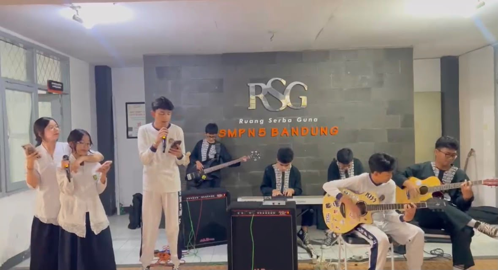
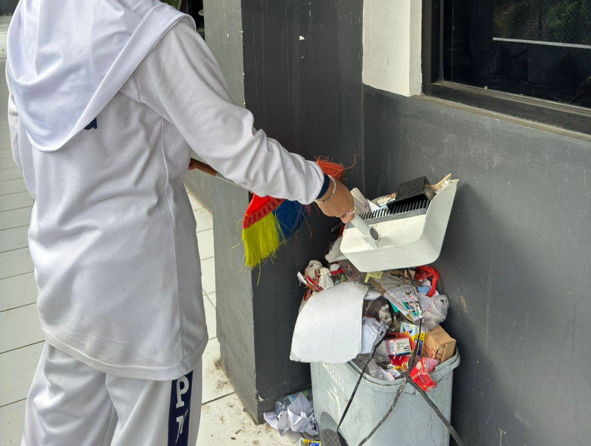
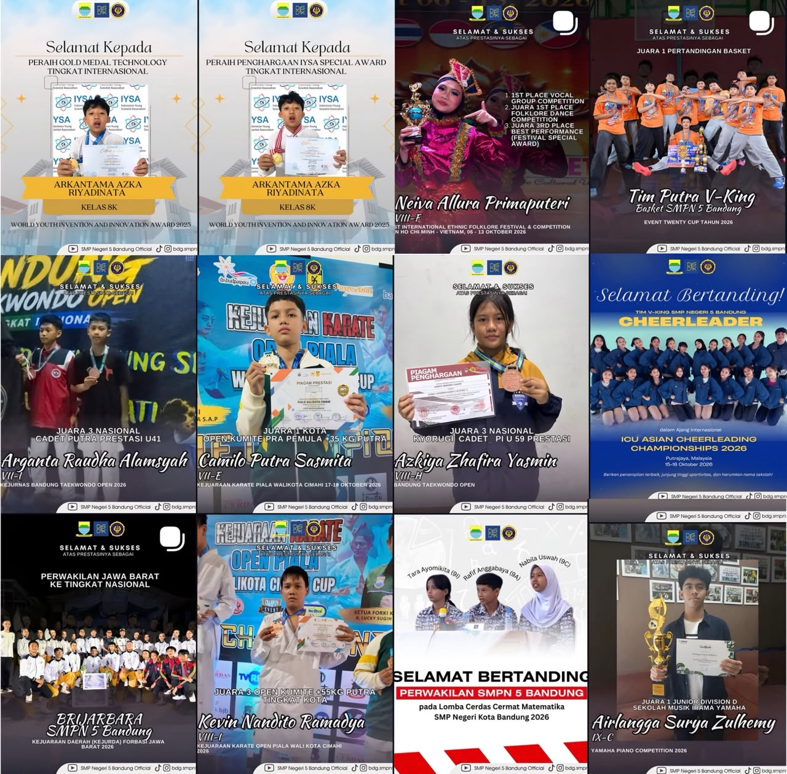

.png)
Hj. Trismawati, S.Pd.
Plt. Kepala Sekolah SMPN 5 Bandung
"Menciptakan lingkungan pendidikan yang inspiratif, unggul dalam prestasi, dan berkarakter mulia."
Kami membimbing setiap peserta didik untuk menggali potensi terbaik mereka melalui ekosistem pembelajaran yang kolaboratif, berbasis teknologi, dan menjunjung tinggi nilai kebudayaan nasional.
Potensi Tanpa Batas
Ruang bagi setiap siswa menemukan dan mengasah bakatnya.
Iklim Belajar Kondusif
Lingkungan aman, sehat, dan memantik rasa ingin tahu.
Iman & Takwa
Karakter yang berakar pada nilai keimanan dan akhlak mulia.
Berwawasan Global
Literasi digital, bahasa, dan kolaborasi lintas budaya.
Perjalanan Bersejarah
SMP Negeri 5 Bandung memiliki akar sejarah panjang sebagai institusi pendidikan terkemuka sejak era kolonial di Jalan Sumatera No. 40.
Didirikan oleh pemerintah Hindia Belanda sebagai sekolah MULO (Meer Uitgebreid Lager Onderwijs) dengan pengantar bahasa Belanda.
Gedung sempat beralih fungsi menjadi markas militer dan tempat penahanan selama Perang Dunia II.
Berubah status menjadi VHO (Voortgezet Hoger Onderwijs) dengan memadukan kurikulum nasional dan pengantar dwibahasa.
Pengelolaan diserahkan sepenuhnya kepada Republik Indonesia dan resmi menyandang nama SMP Negeri 5 Bandung.
Terkenal dengan arsitektur menara kembar (twin tower) di Jl. Sumatera No. 40, telah mencetak banyak tokoh nasional seperti B.J. Habibie, Iwan Fals, hingga Raffi Ahmad.
Berita & Pengumuman
Kabar terbaru, kegiatan kesiswaan, dan prestasi membanggakan warga SMPN 5 Bandung.

OSIS & MPK Sukses Gelar Javastraat Velunafia 2026
Ajang kreativitas seni dan kolaborasi pelajar yang meriah pada 24 Oktober 2026.
Kegiatan & Program Unggulan
Program pembiasaan karakter, literasi, dan pengembangan potensi siswa yang rutin dilaksanakan untuk membentuk profil pelajar Pancasila.

PembiasaanMusik Sapa Pagi
Pementasan musik live oleh siswa di sekolah untuk menyambut warga sekolah setiap Kamis pagi dengan penuh energi positif.

KebersihanJumat Bersih & Sehat
Kegiatan kerja bakti bersama menjaga kebersihan lingkungan sekolah, senam sehat, serta merawat taman Adiwiyata.
 Akademik
Akademik
Literasi & Numerasi
Program peningkatan kemampuan berpikir kritis, analisis data, dan budaya membaca buku sebelum kegiatan belajar dimulai.
 Keagamaan
Keagamaan
Sholat Duha Berjamaah
Pembiasaan ibadah harian untuk memperkuat keimanan, ketakwaan, serta membentuk akhlak mulia seluruh warga sekolah.
Ekstrakurikuler Pilihan
Ansembel
Musik dan kreativitas band sekolah.
Pramuka
Mandiri, tangguh, dan peduli sesama.
Basket
Sportivitas, taktik, dan kerja tim.
Futsal
Kerjasama, stamina, dan sportivitas.
Paskibra
Kedisiplinan, baris-berbaris, dan jiwa korsa.
Seni Tari
Melestarikan seni budaya Nusantara.
STEM / AI
Koding, robotik, dan teknologi modern.
Paduan Suara
Harmoni vokal dan paduan suara.
Momen & Pencapaian

Mari Terhubung
Punya pertanyaan seputar PPDB atau kerja sama? Hubungi kami melalui saluran resmi di bawah ini.
📍 Jl. Sumatera No.40, Merdeka, Kec. Sumur Bandung, Kota Bandung, Jawa Barat 40113
📞 (022) 4207121
✉️ smpnegeri05bandung@gmail.com